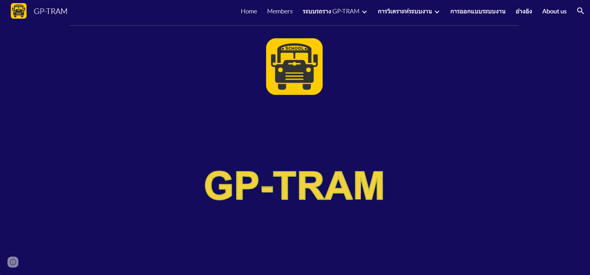

A passionate web developer Data Analyst and
UX/UI , I am a newcomer to the field, specializing in
creating visually stunning, pixel-perfect interactive websites and
applications.
Hello there! I'm Chivorn Kang, a student from
Business Computer at
MBS Mahasarakham University. I have a strong passion for
exploration and a keen interest in learning new things. Described as
dedicated and courageous, I embrace challenges as opportunities for
personal and professional growth.As a budding
Web Developer and Data Analyst, ,
I approach each day with enthusiasm and a commitment to the
implementation process.
Starting my day with a cup of coffee, I eagerly open my laptop to
create web applications and delve into data analysis. I am a driven
individual who thrives on continuous learning, and my friends often
label me as obsessed – a label I proudly wear, given my relentless
pursuit of knowledge and skills in programming and data analysis.
I am excited about the prospect of connecting with like-minded
individuals and am always open to new opportunities. Looking forward
to hearing from you!
Projects
Throughout my journey from year 1 to year 3 at the university, I have
successfully completed a diverse range of projects, showcasing my
evolving skills and knowledge. These accomplishments include in-depth
System Analysis, the development of a C# application for presenting
user data, proficiency in Designing, and comprehensive Web Development
covering both frontend and backend aspects. These projects not only
demonstrate my technical expertise but also reflect my dedication to
continuous learning and growth.
GP-Tram

GP-Tram
Developed the GP-Tram project, the combination project of 3
courses, involving database administration, C# programming, and
the construction of a sophisticated web platform; Designed the
aspects of the GP-Tram application and website; Presented GP-Tram
project to professors and friends
Coordinated and launched BTD Phone Shop, an eCommerce website that
sells smartphones and accessories; administered the BTD Phone Shop
website including insert, update, and delete data from webpage;
motivated teammates and maintained team conflict to ensure the
best performance
During the final term of my second year, I had designed and
implemented two Flutter application. The applications showcase my
proficiency in mobile app development, providing intuitive
interfaces and enhanced user experiences for both the coffee shop
app and restaurant app.